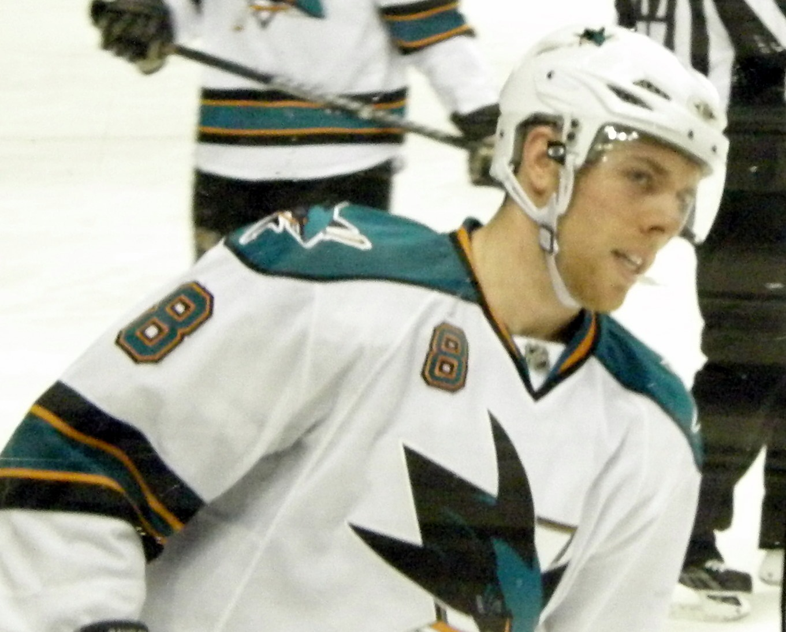
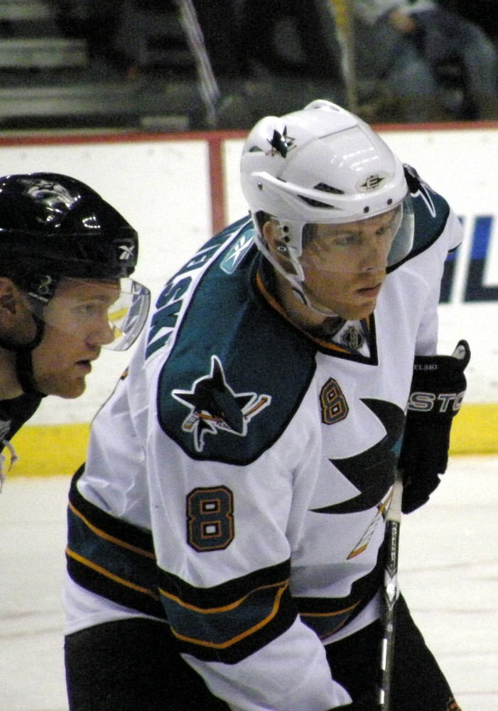

Joe Pavelski
A seventh round pick from Plover, Wisconsin who tipped pucks until he was the captain, and took the Sharks to their first Stanley Cup Final.
The Joe Pavelski Story
Joseph James Pavelski was born on July 11, 1984, in Plover, Wisconsin. His family is Polish, and the name was originally spelled Pawelski. He won a state title at Stevens Point Area Senior High in 2002 and then left home for Waterloo of the USHL, where he struggled at first.
They weren't. He scored 36 goals that first year in Waterloo, led the league, was the rookie of the year, and the Sharks drafted him in the seventh round in 2003, 205th overall. The next year Waterloo won the Clark Cup and he was USA Hockey's junior player of the year. Then two seasons at Wisconsin, 101 points in 84 games, and the 2006 NCAA championship.
He made his NHL debut on November 22, 2006, and scored in a 6 to 3 win over the Kings, the 11th Shark ever to score in his first game. He had 7 goals in his first 12 games. Randy Hahn started calling him Little Joe, a nod to Jumbo Joe Thornton.
By 2007/08 he was playing all 82 games, and in the 2008 playoffs he led the team with three game winning goals. In the 2010 playoffs he had multiple goals in three straight games, the first player to do that since Mario Lemieux in 1992. That February he'd been the only Shark on the U.S. Olympic team that won silver in Vancouver.
He kept climbing. In 2013/14 he scored 41 goals with 79 points, made the NHL second All Star team and finished seventh in the Hart voting. On October 5, 2015, the Sharks named him the ninth captain in team history, over Thornton and Patrick Marleau, who'd both worn the C before.
That first year with the C, he scored 38 goals and led the NHL with 11 game winners. Then he took the Sharks where they'd never been. He led the league with 14 playoff goals, 4 game winners and 5 power play goals, all Sharks records, and San Jose made the Stanley Cup Final for the first time before losing to Pittsburgh in six.
Every day before practice he'd stand in front of the net and tip pucks off Brent Burns' shots, until he was maybe the best deflection guy in the league. On December 1, 2017, he scored his 300th goal on a pass from Thornton, only the second Shark ever to get there.
His last year in teal was 2018/19, and he went out with 38 goals and the wildest night in Sharks history. In Game 7 against Vegas he was cross checked and hit his head on the ice, and while he was in the training room, the Sharks scored four goals on the major and won in overtime. He came back for Game 7 against Colorado and scored the first goal.
When he hit free agency that summer the Sharks wouldn't go three years, and on July 1, 2019, he signed with Dallas for three years and $21 million. He played five more seasons, went to another Final in 2020, had a career high 81 points at 37, scored his 1,000th point in 2023, and retired on July 16, 2024.
In San Jose he played 963 games and scored 355 goals and 761 points, second in team history in goals and third in points, plus 100 points in 134 playoff games. Across his whole career he scored 74 playoff goals, more than any American born player ever.
On December 10, 2025, he was inducted into the United States Hockey Hall of Fame in St. Paul, Minnesota. He and Scott Gomez were the first Sharks players to go in since Tony Granato in 2020.
What He Meant to Us
Joe Pavelski is the guy I'd point to if someone asked me what the Sharks were supposed to be. Not the flashiest player on the ice, not the fastest, not the biggest. Just the one who was always standing in the right spot when the puck showed up.
That 2016 run was the best spring this franchise ever had, and he was the reason. Fourteen goals. The C on his chest for the first time. I remember thinking, okay, this is finally the year. It wasn't, but it was close, and it was his.
And Game 7 against Vegas. I'll never forget watching him get helped off the ice, and then the place just losing its mind as the Sharks scored four on the major. He was in the training room for all of it. Two weeks later he's back scoring in another Game 7.
I was crushed when he went to Dallas. Still am, a little. But the night he came back to SAP Center and got that ovation, you could tell he still felt like one of ours. He is.
In Pictures

Why He Was Clutch
Pavelski scored 48 playoff goals as a Shark and he was at his best when the season was on the line. As a second year player in 2008 he led San Jose with three playoff game winners.
In 2016 he carried the team. He led the entire NHL with 14 playoff goals, 4 of them game winners and 5 of them on the power play, setting Sharks records in all three, and San Jose made its first Stanley Cup Final.
And in 2019 he was the heart of the wildest comeback in team history without even being on the ice, then came back from that head injury to score the first goal of a Game 7 win over Colorado that sent the Sharks to the conference final.
He finished his career with 74 playoff goals, the most ever by an American born player.
Clutch Moments
- November 22, 2006
A goal in his first game
Pavelski scored in his NHL debut, a 6 to 3 win over the Los Angeles Kings, becoming the 11th player in Sharks history to score in his first game.
- 2010 playoffs
The Big Pavelski
Pavelski scored multiple goals in three straight playoff games, Game 6 against Colorado and Games 1 and 2 against Detroit, the first player to do it since Mario Lemieux in 1992. He finished with 9 goals in 15 playoff games.
- 2013/14 season
Forty one goals
Pavelski scored a career high 41 goals with 79 points, was named to the NHL second All Star team and finished seventh in Hart Trophy voting.
- October 5, 2015
The ninth captain
The Sharks named Pavelski captain over two former captains, Joe Thornton and Patrick Marleau. He went on to lead the NHL with 11 game winning goals that season.
- 2016 playoffs
The run to the Final
Pavelski led the league with 14 playoff goals, 4 game winners and 5 power play goals, all Sharks records, as San Jose reached the Stanley Cup Final for the first time and lost to Pittsburgh in six games.
- April 23, 2019
Game 7 against Vegas
Down 3 to 0 in the third, Pavelski was cross checked by Cody Eakin and hit his head on the ice. Eakin got a five minute major, the Sharks scored four goals on it, and Barclay Goodrow won it 5 to 4 in overtime to finish a comeback from 3 to 1 down in the series.
- May 8, 2019
Back for another Game 7
Back from the head injury, Pavelski scored the first goal at 5:57 of the first period, and the Sharks beat Colorado 3 to 2 to reach the Western Conference Final.
- December 10, 2025
U.S. Hockey Hall of Fame
Pavelski was inducted into the United States Hockey Hall of Fame in St. Paul, alongside former Shark Scott Gomez.
The Highlights
What They Said About Pavelski
“He was so good at so many things out there.”
“I think with him, you got what you saw. He was real honest, humble, and that's why everyone respected him and loved playing with him.”
“Every time you doubt him or question what he's going to do, he responds and shoves it down your throat,”
“He thinks things through, and he finds ways to get the most out of himself.”
“It means that I was so lucky to play this game for a long time and have an impact, and the experiences and the life that hockey gave me is just tremendous.”
Career Stats
| Year | Team | GP | G | A | Pts | +/- | PIM | PPG | GWG |
|---|---|---|---|---|---|---|---|---|---|
| 2006/07 | SJS | 46 | 14 | 14 | 28 | +4 | 18 | 5 | 3 |
| 2007/08 | SJS | 82 | 19 | 21 | 40 | +1 | 28 | 8 | 4 |
| 2008/09 | SJS | 80 | 25 | 34 | 59 | +5 | 46 | 8 | 3 |
| 2009/10 | SJS | 67 | 25 | 26 | 51 | +1 | 26 | 3 | 5 |
| 2010/11 | SJS | 74 | 20 | 46 | 66 | +10 | 24 | 11 | 5 |
| 2011/12 | SJS | 82 | 31 | 30 | 61 | +18 | 31 | 8 | 2 |
| 2012/13 | SJS | 48 | 16 | 15 | 31 | +2 | 10 | 5 | 5 |
| 2013/14 | SJS | 82 | 41 | 38 | 79 | +23 | 32 | 16 | 3 |
| 2014/15 | SJS | 82 | 37 | 33 | 70 | +12 | 29 | 19 | 5 |
| 2015/16 | SJS | 82 | 38 | 40 | 78 | +25 | 30 | 12 | 11 |
| 2016/17 | SJS | 81 | 29 | 39 | 68 | +11 | 34 | 7 | 7 |
| 2017/18 | SJS | 82 | 22 | 44 | 66 | 0 | 41 | 7 | 1 |
| 2018/19 | SJS | 75 | 38 | 26 | 64 | -4 | 22 | 12 | 6 |
| 2019/20 | DAL | 67 | 14 | 17 | 31 | +6 | 29 | 6 | 3 |
| 2020/21 | DAL | 56 | 25 | 26 | 51 | +22 | 16 | 13 | 4 |
| 2021/22 | DAL | 82 | 27 | 54 | 81 | +11 | 14 | 12 | 2 |
| 2022/23 | DAL | 82 | 28 | 49 | 77 | +42 | 8 | 13 | 2 |
| 2023/24 | DAL | 82 | 27 | 40 | 67 | +12 | 20 | 11 | 4 |
| Career | 1,332 | 476 | 592 | 1,068 | +201 | 458 | 176 | 75 |
Sharks only, 963 games: 355 goals, 406 assists, 761 points. The 2012/13 season was shortened to 48 games by the lockout; he played that fall for Dinamo Minsk in the KHL. Scroll the table sideways on a phone.
Playoffs
| Year | Team | GP | G | A | Pts | +/- | PIM | PPG | GWG |
|---|---|---|---|---|---|---|---|---|---|
| 2006/07 | SJS | 6 | 1 | 0 | 1 | +2 | 0 | 0 | 0 |
| 2007/08 | SJS | 13 | 5 | 4 | 9 | +3 | 0 | 2 | 3 |
| 2008/09 | SJS | 6 | 0 | 1 | 1 | -3 | 9 | 0 | 0 |
| 2009/10 | SJS | 15 | 9 | 8 | 17 | +6 | 6 | 5 | 3 |
| 2010/11 | SJS | 18 | 5 | 5 | 10 | +1 | 10 | 1 | 1 |
| 2011/12 | SJS | 5 | 0 | 0 | 0 | -3 | 5 | 0 | 0 |
| 2012/13 | SJS | 11 | 4 | 8 | 12 | 0 | 0 | 3 | 0 |
| 2013/14 | SJS | 7 | 2 | 4 | 6 | -3 | 2 | 1 | 0 |
| 2015/16 | SJS | 24 | 14 | 9 | 23 | +1 | 4 | 5 | 4 |
| 2016/17 | SJS | 6 | 2 | 2 | 4 | -1 | 0 | 1 | 1 |
| 2017/18 | SJS | 10 | 2 | 6 | 8 | -3 | 8 | 2 | 0 |
| 2018/19 | SJS | 13 | 4 | 5 | 9 | -3 | 4 | 2 | 0 |
| 2019/20 | DAL | 27 | 13 | 6 | 19 | +6 | 30 | 3 | 0 |
| 2021/22 | DAL | 7 | 3 | 3 | 6 | +2 | 2 | 1 | 2 |
| 2022/23 | DAL | 14 | 9 | 5 | 14 | -1 | 2 | 4 | 4 |
| 2023/24 | DAL | 19 | 1 | 3 | 4 | -5 | 2 | 0 | 0 |
| Career | 201 | 74 | 69 | 143 | -1 | 84 | 30 | 18 |
Joe Pavelski: Fast Facts
What years was Joe Pavelski with the San Jose Sharks?
Joe Pavelski was with the San Jose Sharks from 2006 to 2019 as a center.
What number did Joe Pavelski wear?
Joe Pavelski wore number 8.
What are Joe Pavelski's signature numbers?
355 goals as a Shark, second in franchise history; 14 goals in the 2016 playoffs, most in the NHL; 74 career playoff goals, most by an American born player; 205 where he was drafted, seventh round, 2003.
What were Joe Pavelski's biggest honors?
United States Hockey Hall of Fame (2025); Sharks captain (2015 to 2019); 4x NHL All Star (2016, 2017, 2019, 2022); NHL Second All Star Team (2014); Olympic silver medal (2010).
What are some of Pavelski's biggest moments?
A goal in his first game (November 22, 2006); The Big Pavelski (2010 playoffs); Forty one goals (2013/14 season). Every one is in the Clutch Moments section above.